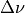
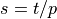
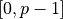
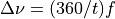

WsfConstellationMaker¶
- WsfConstellationMaker
WsfConstellationMaker provides a scripted ability to create constellations of space platforms. Created constellations can then be managed with a WsfConstellation.
Overview¶
Constellations created by this object are all formed by defining a set of orbital planes, with each plane having an equal number of members. The orbits in each plane differ only in the initial anomaly of the member, and are distributed uniformly around one full orbit. In this way the plane’s members sweep through the same path in the orbital plane, but reach each point in that path at a different time.
The inclination and the size of the orbits are the same for each member of the constellation. The RAAN of the orbital planes is spread evenly over a specifiable range, though this is typically either the full 360 degrees or 180 degrees.
The relative placement of members of a plane, and those members one plane to the east is controlled by the inter-plane phasing. This phasing advances the members of the next plane a given amount in true anomaly.
The RAAN of the first orbital plane, and the true anomaly of the first member of the first orbital plane can be set to provide fine control over the placement of the constellation members.
Design Types¶
There are three overall design types supported by this object: the general design, the Walker Delta, and the Walker Star. Each design sets the basic parameters of the constellation.
A general design is defined by the number of planes,
, the number of satellites per plane, , the inter-plane phasing, , and the range of RAAN over which the orbital planes are distributed.
A Walker Delta design is defined by the total number of satellites,
, the number of planes,
A Walker Star design is defined by the total number of satellites,
For Walker designs, the number of satellites per plane, , is easily
computed: . For this reason, must be evenly divisible
by . The Walker parameter is limited to be in the range
. is equivalent to ,
with the two related by .
Platform Instances¶
Constellations created with WsfConstellationMaker objects will have a name. This name controls the names of the platform instances that will ultimately form the constellation. If the constellation has a name ‘<name>’, then the ‘<nth>’ member of plane ‘<plane>’ will have the name ‘<name>_<plane>_<nth>’. For example, the 0th member of the 4th plane of the constellation named ‘sample’ will have the name ‘sample_4_0’.
The type of the platform instances created by a WsfConstellationMaker instance is a user-specifiable parameter.
Static Methods¶
The following methods are static, and can be used to create a WsfConstellationMaker.
- static WsfConstellationMaker CreateGeneral(int aNumPlanes, int aSatellitesPerPlane, double aAnomalyAlias, double aRAAN_Range)¶
Return a new instance of a WsfConstellationMaker that can be used to generate a general constellation. These constellations are defined by the number of satellites per plane, the number of planes, the inter-plane phasing parameter in degrees, aAnomalyAlias, and the range in RAAN in degrees over which the planes of the constellation are to be spread, aRAAN_Range. If there are any input arguments that are out of range, this method will print a message and return an invalid object.
- static WsfConstellationMaker CreateWalkerDelta(int aTotalSatellites, int aNumPlanes, int aWalkerF)¶
Return a new instance of a WsfConstellationMaker that can be used to generate Walker Delta constellations. These constellations are defined by the total number of satellites, the number of planes, and the inter-plane phasing parameter, f. If the total number of satellites is not evenly divisible by the number of planes, or if the f parameter is not between zero and the number of planes minus one, then this method will return an invalid object.
- static WsfConstellationMaker CreateWalkerStar(int aTotalSatellites, int aNumPlanes, int aWalkerF)¶
Return a new instance of a WsfConstellationMaker that can be used to generate Walker Star constellations. These constellations are defined by the total number of satellites, the number of planes, and the inter-plane phasing parameter, f. If the total number of satellites is not evenly divisible by the number of planes, or if the f parameter is not between zero and the number of planes minus one, then this method will return an invalid object.
Action Methods¶
These methods are the main actions taken with this object. This WsfConstellationMaker must be fully set up (i.e., WsfConstellationMaker.IsSetup returns true) to use these methods. If these are used on an object that is not fully set up, they will print out the missing or out-of-range parameters to the console.
- bool DetectConjunction()¶
Returns true if the constellation design represented by this object would have members that suffer a conjunction with other members of the constellation. This method can also return false if this is called on an object that is not fully set up.
This method does not require that the constellation to be created to give results; this method is useful for filtering out possible constellation designs before they are instantiated.
- WsfConstellation Create()¶
This method will instantiate a set of platforms into the simulation that realize the constellation design represented by this object. This method returns a WsfConstellation object the represents the generated collection of platforms. If there is a problem with creating the constellation, this method returns an invalid object.
The platforms created by this method will be added with a creation time equal to the simulation time at which this method is called. Further, the epoch of the orbits for the platforms created by this method will be set to the time at which this method is called.
The platforms that are created will have the type selected by the user (see WsfConstellationMaker.SetPlatformType). The platform type so specified must exist, and must have a space mover. The constellation name (see WsfConstellationMaker.SetConstellationName) must be unique in a simulation, and be chosen so that no possible member platform would be created with a name that is already used by a platform in the simulation. If any of these requirements are violated, this method will add nothing to the simulation, and return an invalid object.
- WsfConstellation Create(string aFilterMethodName, string aSetupMethodName)¶
This method operates similarly to the previous, but allows for more customization by the user via two scripts.
The first argument, aFilterMethodName, provides the name of a script defined in the global context that can be used to filter out some constellation members before they are added to the simulation. For each potential constellation member, the script named in the first argument is called, and the member is not added if the script returns true. The script named in the first argument must return a bool and must accept two integer arguments: the first giving the orbital plane in which the proposed member would reside, and the second giving the satellite number in the plane in which the proposed member would reside.
As an example, providing the name of the following script as the first argument would filter out the constellation member in plane 1, position 3:
script bool ExampleFilterScript(int aPlane, int aSatellite) bool retval = false; if (aPlane == 1 && aSatellite == 3) { retval = true; } return retval; end_script
The second argument, aSetupMethodName, provides the name of a script defined in the global context that can be used to perform any post-initialization setup for the member platforms. After all member platforms have been added to the simulation, the script named in the second argument to this function is called for each member. The script should return nothing, and accept four arguments: the WsfConstellation object in which the platform is a member; an integer giving the orbital plane of the member; an integer giving the satellite number in the plane of the member; and the WsfPlatform for the member itself.
As an example, providing the name of the following script as the second argument would print out a message detailing each member of the constellation:
script void ExampleSetupScript(WsfConstellation aConstellation, int aPlane, int aSatellite, WsfPlatform aMember) writeln("Constellation ", aConstellation.ConstellationName(), " has member ", aMember.Name(), " in orbital plane ", (string)aPlane, " position ", (string)aSatellite); end_script
One or both of these arguments can be an empty string, in which case either filtering or post-initialization setup is skipped. The zero-argument form of this method is equivalent to this method with two empty strings as arguments. Scripts with the given names must actually exist, and their signatures must conform to the requirements laid out above.
- bool WriteToFile()¶
This method creates an AFSIM input file for the constellation design represented by this object. The name of the generated file will be based on the name of the constellation: if the constellation has the name ‘<name>’, then the generated file will be called ‘<name>_autogen.txt’. This file will be generated into the folder specified by the path set on this object (see WsfConstellationMaker.BasePath and WsfConstellationMaker.SetBasePath). If there are any errors during this method, a message will be output and this method will return false.
Status Methods¶
- bool IsSetup()¶
Returns true if the constellation parameters have been fully defined, or false if they have not been. See Setup Methods for details.
- string Validate()¶
Returns a string indicating which constellation parameters are out of range, or which have not been defined. The returned string will be empty if there are no problems with the constellation parameters.
- bool IsGeneral()¶
Returns true if the constellation that this object will create has a general design.
- bool IsWalkerDelta()¶
Returns true if the constellation that this object will create has a Walker Delta design.
- bool IsWalkerStar()¶
Returns true if the constellation that this object will create has a Walker Star design.
Setup Methods¶
These methods are used to setup the remaining details of the constellations that are generated by a WsfConstellationMaker that are not set upon initial creation. If the object is not completely set up using these methods, this object will be unable to create constellations. With the exception of the base path (see WsfConstellationMaker.SetBasePath), each of the following parameters must be explicitly set. Note that there are four equivalent ways of specifying the size of the orbit.
- void SetSemiMajorAxis(double aSemiMajorAxis)¶
Set the semi-major axis in meters of the orbits for the constellations created by this object. This is one of four equivalent ways of specifying orbit size.
- void SetAltitude(double aAltitude)¶
Set the altitude in meters of the orbits for the constellations created by this object. This is one of four equivalent ways of specifying orbit size.
- void SetRevolutionsPerDay(double aRevolutionsPerDay)¶
Set the number of revolutions per day of the orbits for the constellations created by this object. This is one of four equivalent ways of specifying orbit size.
- void SetPeriod(double aPeriod)¶
Set the period in seconds of the orbits for the constellations created by this object. This is one of four equivalent ways of specifying orbit size.
- void SetInclination(double aInclination)¶
Set the inclination in degrees of the orbits for the constellations created by this object.
- void SetInitialRAAN(double aInitialRAAN_Deg)¶
Set the RAAN of the first orbital plane for the constellations created by this object.
- void SetInitialAnomaly(double aInitialAnomalyDeg)¶
Set the true anomaly in degrees of the first member of the first orbital plane for the constellations created by this object.
- void SetConstellationName(string aConstellationName)¶
Set the name of the constellations created by this object.
Parameter Methods¶
- int TotalSatellites()¶
Return the total number of members,
, for constellations created by this object.
- int Planes()¶
Return the number of orbital planes,
, for constellations created by this
object.
- int SatellitesPerPlane()¶
Return the number of members per orbital plane, , for constellations created by this object.
- int WalkerF()¶
Return the Walker parameter for constellations created by this object. If this object was created with WsfConstellationMaker.CreateGeneral (i.e., WsfConstellationMaker.IsGeneral returns true), then this method will return 0.
- double AnomalyAlias()¶
Return the inter-plane phasing for constellations created by this object.
- double RAAN_Range()¶
Return the range in RAAN over which the orbital planes are distributed for constellations created by this object.
- double SemiMajorAxis()¶
Return the semi-major axis in meters of the orbits for constellations created by this object.
- double Altitude()¶
Return the altitude in meters of the orbits for constellations created by this object.
- double RevolutionsPerDay()¶
Return the number of revolutions per day of the orbits for constellations created by this object.
- double Period()¶
Return the period in seconds of the orbits for constellations created by this object.
- double Inclination()¶
Return the inclination in degrees of the orbits for constellations created by this object.
- double InitialRAAN()¶
Return the RAAN in degrees of the first plane for constellations created by this object.
- double InitialAnomaly()¶
Return the true anomaly in degrees of the first member of the first plane for constellations created by this object.